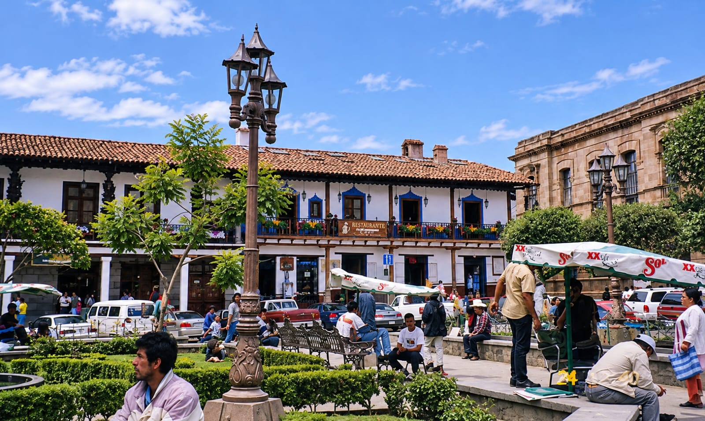
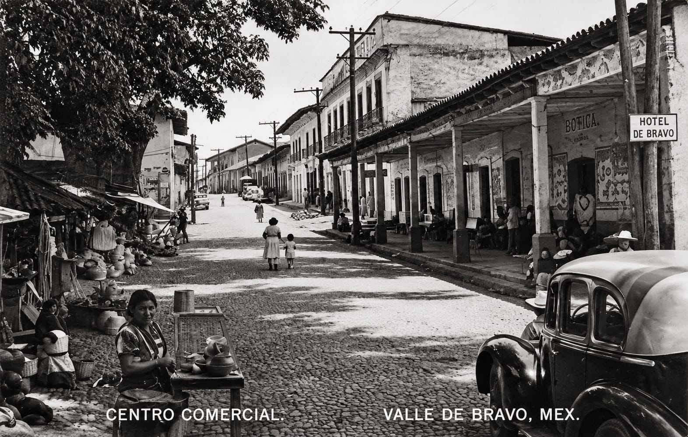

“A través de los años, el centro de Valle de Bravo ha experimentado cambios importantes en su arquitectura, comercio y vida social. Las fotografías antiguas muestran calles empedradas, establecimientos comerciales, viviendas y espacios donde los habitantes realizaban sus actividades cotidianas.
Con el paso del tiempo, estos espacios evolucionaron sin perder por completo su esencia arquitectónica. Actualmente, sus portales, balcones, fachadas y calles representan un atractivo para quienes disfrutan del turismo cultural y desean conocer cómo era la vida en el Valle de Bravo de otras épocas.

El Jardín Central de Valle de Bravo es uno de los lugares más representativos del municipio y un punto de encuentro para habitantes y turistas. En esta fotografía se aprecia una imagen de cómo lucía anteriormente este espacio, destacando sus tradicionales portales, construcciones de dos niveles, balcones de madera y faroles que aportaban un ambiente colonial a la plaza.
A lo largo de los años, este lugar ha experimentado diversas transformaciones en su infraestructura y apariencia, conservando elementos arquitectónicos que forman parte de la identidad vallesana. Actualmente, sus alrededores ofrecen una experiencia turística donde los visitantes pueden recorrer los comercios, disfrutar de la gastronomía local, probar una nieve artesanal y apreciar la belleza del centro histórico.